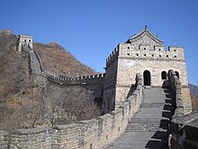
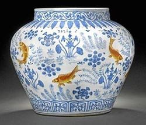
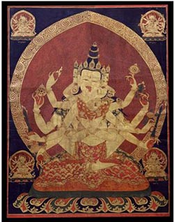

Dinastía Ming
Introducción
La dinastía Ming, (chino: 明朝) oficialmente Gran Ming (chino: 大明, Wade-Giles: Ta Ming, pinyin: Dà Míng) fue la penúltima dinastía de China, que gobernó entre los años 1368 y 1644, tras la caída de la dinastía mongol Yuan. Algunos historiadores describen a los Ming como “una de las mayores eras de gobierno disciplinado y estabilidad social de la historia humana”. Ming gobernó el país durante 276 años, y fue la última dinastía en China gobernada por la etnia han. Aunque Pekín, la capital Ming, cayó en 1644 en una rebelión liderada por Li Zicheng (quien estableció la dinastía Shun, que fue rápidamente sustituida por la dinastía Qing, de origen manchú), sobrevivieron hasta 1662 algunos regímenes leales al trono Ming, conocidos comúnmente como los Ming del Sur. Bajo el gobierno de los Ming se construyó una vasta flota y un extenso ejército permanente de un millón de efectivos. Aunque ya se habían llevado a cabo expediciones comerciales y diplomáticas desde China en periodos anteriores, la flota tributaria del almirante eunuco musulmán Zheng He durante el siglo xv superó a todas las demás en tamaño. Se realizaron numerosos proyectos de construcción, incluyendo el Gran Canal, la Gran Muralla y la fundación de la Ciudad Prohibida en Pekín durante el primer cuarto del siglo xv. Se estima que la población a finales del reinado de los Ming era de entre 160 y 200 millones de personas. El emperador Hongwu, que reinó entre 1368 y 1398, intentó crear una sociedad de comunidades rurales autosuficientes en un sistema rígido e inmóvil que no necesitasen involucrarse en la vida comercial de los centros urbanos. Su reconstrucción de la base agrícola china y la mejora de las vías de comunicación a través de un sistema de caminos militarizados tuvo el efecto inesperado de generar un gran excedente agrícola que pudo ser vendido en florecientes mercados cercanos a las vías de comunicación. La cultura rural y comercial recibió la influencia de las modas urbanas. Los escalones más altos de la sociedad, equiparados a la baja nobleza, se vieron igualmente afectados por esta nueva cultura centrada en el consumo. Alejándose de las tradiciones, las familias comerciantes comenzaron a integrarse en el seno de la administración y de la burocracia y adoptaron los rasgos culturales y las prácticas de la nobleza. Paralelo a esta evolución de la sociedad y del comercio, hubo cambios en el pensamiento filosófico, las instituciones gubernamentales y en las artes y la literatura. Hacia el siglo xvi, la economía Ming se estimuló por el comercio con los portugueses, los somalíes, los españoles y los neerlandeses. China se vio envuelta en un incipiente comercio global de materiales, plantas, animales, comida y grano conocido como comercio colombino. El comercio con las potencias europeas y Japón trajo enormes cantidades de plata, lo que sustituyó al cobre y al papel moneda como el medio común de intercambio en China. Durante las últimas décadas de los Ming, el flujo de plata en China disminuyó en gran medida, minando las arcas estatales. Este daño a la economía Ming tuvo varios factores: los efectos en la agricultura de la Pequeña Edad de Hielo, desastres naturales y epidemias. El consiguiente desgaste de las autoridades y la escasez de sustento permitieron a los líderes rebeldes como Li Zicheng desafiar la autoridad de los Ming.
Historia
Fundación
Revuelta y rivalidad entre los rebeldes
La dinastía Yuan (1271-1368), establecida tras la invasión mongola dirigida por Kublai Kan, precedió a la fundación de la dinastía Ming. Además de una discriminación institucional contra los han que generó gran resentimiento, la expulsión de los Yuan se debió a los altos impuestos en las regiones, la alta inflación y las graves inundaciones del río Amarillo, debidos al abandono de los proyectos de irrigación. Por consecuente, la agricultura y la economía estaban arruinadas y la revuelta estalló entre los cientos de miles de agricultores que habían sido llamados a reparar los diques del río Amarillo. Muchos grupos de han, entre ellos los Turbantes Rojos se alzaron en rebelión en 1351. Los Turbantes Rojos estaban afiliados al Loto Blanco, una sociedad secreta budista. Zhu Yuanzhang era un agricultor pobre y un monje budista que se unió a los Turbantes Rojos en 1352 y se forjó una reputación al casarse con la hija adoptiva de un comandante rebelde. En 1356, las fuerzas de Zhu tomaron la ciudad de Nankín, la cual se convertiría posteriormente en la capital de los Ming. Con el desmoronamiento de la dinastía Yuan, muchos grupos rebeldes comenzaron a enfrentarse por el control del país y el derecho a establecer una nueva dinastía. En 1363, Zhu Yuanzhang eliminó a su peor enemigo, el líder de la facción rebelde Chen Youliang, en la batalla del lago Poyang, en la que fuera posiblemente una de las mayores batallas navales de la historia. Gracias al uso de brulotes, los 200 000 marinos de Zhu consiguieron vencer a la flota rebelde pese a ser esta superior en número. La victoria eliminó a la última facción rebelde, lo que dejó a Zhu Yuanzhang como dueño incontestable del rico valle del Yangtsé y le permitió afianzar su poder en el Sur. Tras la sospechosa muerte del jefe de los Turbantes Rojos cuando era un invitado de Zhu en 1367, ya no había nadie que pudiera impedir su acceso al trono e hizo públicas sus ambiciones imperiales al enviar su ejército hacia la capital Yuan Dadu (actual Pekín) en 1368.9 El último emperador Yuan se refugió en el norte, en Shangdu y Zhu anunció la fundación de la dinastía Ming tras arrasar el palacio Yuan de Dadu. La ciudad fue renombrada como Beiping y Zhu Yuanzhang tomó el nombre de Hongwu (Extremadamente Militar, en chino).
Reinado del emperador Hongwu
Hongwu realizó un inmediato esfuerzo para reconstruir las infraestructuras del país. Hizo construir un muro de 48 km alrededor de Nankín, así como numerosos palacios y centros administrativos. El libro de los Ming afirma que desde 1364 Zhu había comenzado a redactar un nuevo código penal confuciano, el Da Ming Lü, que se terminó en 1397 y recuperaba algunos elementos del código Tang del año 653. Hongwu organizó un sistema militar Hongwu realizó un inmediato esfuerzo para reconstruir las infraestructuras del país. Hizo construir un muro de 48 km alrededor de Nankín, así como numerosos palacios y centros administrativos. El libro de los Ming afirma que desde 1364 Zhu había comenzado a redactar un nuevo código penal confuciano, el Da Ming Lü, que se terminó en 1397 y recuperaba algunos elementos del código Tang del año 653. Hongwu organizó un sistema militar llamado weisuo, similar al sistema fubing de la dinastía Tang (618-907). En 1380, Hongwu mandó ejecutar a su canciller Hu Weiyong (胡惟庸) tras los rumores de golpe de Estado. Abolió ese puesto y asumió las funciones de emperador y de primer ministro, lo que siguieron haciendo la mayoría de sus herederos. Cada vez más desconfiado de sus ministros y discípulos, Hongwu creó la Jinyi Wei, una policía secreta formada por sus propios guardias. Esta fue parcialmente responsable de la muerte de 100 000 personas en numerosas purgas que hubo durante las tres décadas de mandato de Hongwu.
Frontera Sudoeste
En Qinghai, el pueblo musulmán salar se sometió voluntariamente al poder de los Ming, al capitular sus líderes hacia el año 1370. Las tropas uigures del general Hala Bashi aplacaron las rebeliones Miao de la década de 1370 y se asentaron en Changde, Hunan. Las tropas Hui musulmanas también se asentaron en Changde tras servir en las campañas de los Ming contra las tribus aborígenes. En 1381, la dinastía Ming se anexionó las áreas del sudoeste (Yunnan) que habían pertenecido al reino de Dali tras la conquista por los ejércitos Hui musulmanes de los Ming de esos territorios, que se encontraban controlados por los mongoles fieles a la dinastía Yuan. Los Hui del general Mu Ying, que fue nombrado gobernador de Yunnan, se reinstalaron en la región para colonizarlo. Hacia finales del siglo xiv, alrededor de 200 000 colonos se habían instalado en una superficie de 1416 km cuadrados que abarcaban las actuales provincias de Yunnan y Guizhou. Alrededor de medio millón de colonos más llegaron posteriormente. Estas migraciones supusieron profundos cambios en la composición étnica de esta región donde, hasta el momento, la etnia Han suponía menos de la mitad de la población. El resentimiento contra estos cambios masivos de población y la presencia gubernamental que ello supuso, provocó numerosas revueltas de los yiao y miaoen entre 1464 y 1466, que fueron aplacadas por una fuerza de 30 000 soldados Ming que se unieron a los 160 000 soldados apostados en Guangxi. Después de que el estudioso y filósofo Wang Yangming (1472-1529) suprimiera otra rebelión en la región, este abogó por la creación de una sola administración unitaria y centralizada de grupos étnicos indígenas para sinizar a estos grupos locales.
Frontera Sudoeste
En Qinghai, el pueblo musulmán salar se sometió voluntariamente al poder de los Ming, al capitular sus líderes hacia el año 1370. Las tropas uigures del general Hala Bashi aplacaron las rebeliones Miao de la década de 1370 y se asentaron en Changde, Hunan. Las tropas Hui musulmanas también se asentaron en Changde tras servir en las campañas de los Ming contra las tribus aborígenes. En 1381, la dinastía Ming se anexionó las áreas del sudoeste (Yunnan) que habían pertenecido al reino de Dali tras la conquista por los ejércitos Hui musulmanes de los Ming de esos territorios, que se encontraban controlados por los mongoles fieles a la dinastía Yuan. Los Hui del general Mu Ying, que fue nombrado gobernador de Yunnan, se reinstalaron en la región para colonizarlo. Hacia finales del siglo xiv, alrededor de 200 000 colonos se habían instalado en una superficie de 1416 km cuadrados que abarcaban las actuales provincias de Yunnan y Guizhou. Alrededor de medio millón de colonos más llegaron posteriormente. Estas migraciones supusieron profundos cambios en la composición étnica de esta región donde, hasta el momento, la etnia Han suponía menos de la mitad de la población. El resentimiento contra estos cambios masivos de población y la presencia gubernamental que ello supuso, provocó numerosas revueltas de los yiao y miaoen entre 1464 y 1466, que fueron aplacadas por una fuerza de 30 000 soldados Ming que se unieron a los 160 000 soldados apostados en Guangxi. Después de que el estudioso y filósofo Wang Yangming (1472-1529) suprimiera otra rebelión en la región, este abogó por la creación de una sola administración unitaria y centralizada de grupos étnicos indígenas para sinizar a estos grupos locales.
Relaciones con el Tíbet
El Libro de los Ming, la historia oficial de la dinastía Ming compilada por la dinastía Qing en 1739, afirma que los Ming establecieron encomiendas itinerantes para supervisar la administración tibetana y renovar los títulos de los antiguos oficiales de la dinastía Yuan del Tíbet y confiriendo títulos principescos a los líderes de las sectas budistas tibetanas. Sin embargo, Turrel V. Wylie adelanta que la censura en el Libro de los Ming destinada a promover a todo precio el prestigio y la reputación del emperador, eliminó los detalles de las relaciones sino-tibetanas durante el período Ming. Los especialistas modernos siguen debatiendo si la dinastía Ming era realmente soberana del Tíbet o se trataba de una suzeranía débil que se terminó cuando el emperador Jiajing (gobernó entre 1521-67) persiguió el budismo en favor del taoísmo en la corte. Otros especialistas afirman que la naturaleza profundamente religiosa de las relaciones entre la corte de los Ming y los lamas tibetanos está poco representada en las investigaciones modernas. Otros subrayan el aspecto comercial de las relaciones, destacando el intercambio de caballos tibetanos por té chino. Los Ming comenzaron a realizar intervenciones militares esporádicas en el Tíbet durante el siglo xiv mientras que los tibetanos organizaron con éxito una resistencia armada contra las incursiones Ming. Patricia Ebrey, Thomas Laird, Wang Jiawei y Nyima Gyaincain remarcan que la dinastía Ming no situó tropas permanentes en Tíbet, a diferencia de la dinastía precedente (los Yuan mongoles). El emperador Wanli (1572-1620) llevó a cabo algunos intentos de restablecer las relaciones sino-tibetanas antes de la alianza mongol-tibetana iniciada en 1578, la cual afectó a la política exterior de la posterior dinastía Qing (1644-1912) de origen manchú, suponiendo el apoyo al dalái lama de la orden de los Bonetes Amarillos. A finales del siglo xvi, los mongoles mostraron ser los protectores armados del dalái lama tras su instalación en la región de Amdo, lo que culminó con la conquista del Tíbet por parte de Güshi Khan (1582-1655) en 1642.
Reinado del emperador Yongle
Ascenso al poder
El emperador Hongwu designó a su nieto Zhu Yunwen como sucesor y este subió al trono bajo el nombre de Jianwen (1398-1402) tras la muerte de Hongwu en 1398. El más poderoso de los hijos de Hongwu, Zhu Di, que por entonces era jefe del ejército, se opuso a esta decisión y tras una confrontación política se levantó contra su sobrino. Después de que Jianwen mandase arrestar a numerosos asociados de Zhu Di, este último organizó una rebelión que llevó a una guerra civil de tres años. Bajo el pretexto de salvar al joven Jianwen de los funcionarios corruptos, Zhu Di dirigió personalmente la revuelta. El palacio de Nankín resultó incendiado y el emperador Jianwen, su mujer, su madre y los cortesanos murieron en el incendio. Zhu Di subió al trono bajo el nombre de Ming Yongle (1402-1424). Su reino es considerado universalmente por todos los especialistas como la “segunda fundación” de la dinastía Ming puesto que anuló numerosas reformas de su padre.
Nueva capital
Yongle relegó a Nankín al rango de segunda capital y en 1403 anunció que la nueva capital de China sería Pekín, su feudo militar. La construcción de la nueva ciudad se desarrolló entre 1407 y 1420 y requirió el trabajo de cientos de miles de obreros. En el centro se encontraba el poder político de la Ciudad Imperial y en el centro de este estaba la Ciudad Prohibida, el palacio del Emperador y su familia. En 1552, la ciudad se extendió hacia el sur, ampliando su tamaño hasta 47 km². Tras haber estado abandonado durante varias décadas, se restauró el Gran Canal entre 1411 y 1415. La principal razón de esta restauración, fue la dificultad de transportar los cereales hacia el norte. El transporte de los 4 000 000 de shi (un shi equivale a 107 litros) era complicado por la existencia de otros canales que obligaban a realizar numerosas cargas y descargas. Otras fuentes de la época hablan de hasta 30 millones de shi de cereales recogidos. Yongle reclutó 165 000 obreros para dragar el canal en Shandong y construir una serie de quince esclusas. La reapertura del canal permitió a la ciudad Suzhou sustituir a Nankín como principal centro comercial de China. Yongle reclutó a 2000 eruditos para redactar la Enciclopedia Yongle, compuesta por más de 50 millones de sinogramas y dividida en 22 938 capítulos, para compilar los conocimientos de la época.
Flota de los Tesoros

En 1405, el emperador Yongle situó a su eunuco favorito, el almirante Zheng He (1371-1433), a la cabeza de una gigantesca flota de navíos destinados a misiones diplomáticas. Los chinos habían realizado misiones diplomáticas terrestres hacia el este durante el período Han (202 a. C.-220 d. C.) y practicaban el comercio marítimo con territorios tan lejanos como África oriental. Sin embargo, el tamaño de esta nueva flota no se había visto jamás. Se realizaron un total de siete viajes diplomáticos principalmente en el océano Índico. Entre 1403 y 1429, los astilleros navales de Nankín construyeron 2000 navíos, entre los que se encontraban numerosos barcos del tesoro, que se cree que medían entre 112 y 134 metros de largo y entre 45 y 54 de ancho. Aunque estos datos no son seguros, está claro que eran mucho más grandes que cualquier navío europeo de la época. Estos viajes diplomáticos finalizaron a la muerte del emperador Yongle, puesto que China debía hacer frente a la amenaza de los mongoles en el norte y no había recursos suficientes para financiar estas ruinosas expediciones. El país se encerró en sí mismo y, en 1479, los documentos relativos a estos viajes fueron destruidos y se dictaron leyes prohibiendo la construcción de grandes navíos. Esta decisión propició el desarrollo de la piratería en las costas chinas. Los piratas japoneses (Wakō) comenzaron a llevar a cabo incursiones en las comunidades costeras, pero la mayoría de los ataques los realizaban los propios piratas chinos.
La crisis de Tumu y los mongoles Ming
El líder mongol de los oirates, Esen Taidji, lanzó una invasión a China en julio de 1449. El jefe eunuco Wang Zhen animó al emperador Zhengtong (1435-1449) a dirigir personalmente una fuerza militar para enfrentarse a los mongoles tras una primera derrota de los Ming; Zhengtong salió de la capital con 500 000 hombres, dejando a su medio hermano Zhu Qiyu a cargo de los asuntos y regente temporal. El 8 de septiembre, Esen venció al ejército Ming y capturó a Zhengtong, suceso conocido como la crisis de Tumu. Los mongoles querían cambiar al emperador Zhengtong por un rescate, pero el plan fracasó cuando el joven hermano de Zhengtong subió al trono con el nombre de Jingtai (1449-1457). Los mongoles fueron repelidos por el nuevo ministro de guerra Yu Qian (1398-1457). Mantener a Zhengtong en cautividad se había vuelto inútil dado que había un nuevo emperador en su lugar y los mongoles decidieron liberarlo. Zhengtong fue puesto en arresto domiciliario en palacio hasta 1457, cuando un golpe de Estado le permitió volver a ser emperador bajo el nombre de Tianshun (1457-1464). Su reinado fue tormentoso y la integración de las fuerzas mongolas en el seno del ejército Ming continuó resultando problemática. El 7 de agosto de 1461 el general chino Cao Qin y sus tropas Ming de ascendencia mongola, organizaron un golpe de Estado contra Tianshun, por miedo a ser las siguientes víctimas de las purgas de los que habían apoyado a Jingtai. Los rebeldes consiguieron incendiar las puertas occidentales de la Ciudad Imperial y mataron a numerosos ministros influyentes antes de ser repelidos, tras lo cual Cao Qin se suicidó. Aunque el emperador Yongle había organizado cinco grandes ofensivas al norte de la Gran Muralla contra los mongoles, la amenaza permanente de incursiones mongolas llevó a las autoridades Ming a fortificar la Gran Muralla a finales del siglo xv. Sin embargo, John Fairbank puntualiza que “esto se mostró poco eficaz pero reflejaba la mentalidad defensiva de China”. Pese a todo, la Gran Muralla no tenía una intención meramente defensiva, sus torres albergaban unos fuegos que permitían señalar los movimientos de las tropas enemigas.
Contacto con los europeos
Si bien Jorge Álvares fue el primero en llegar a la isla de Lintin en el delta del río Perla en mayo de 1513, fue Rafael Perestrello, un primo de Cristóbal Colón, quien se convirtió en el primer explorador europeo en desembarcar en la costa sur de China y en comerciar con Guangzhou en 1516. En 1517, los portugueses lanzaron una gran expedición comercial en Guangzhou y enviaron una delegación en nombre de Manuel I de Portugal a la corte del emperador Zhengde. Las relaciones se degradaron rápidamente tras la muerte del emperador cuando los embajadores de Malaca (en la actual Malasia) acusaron a los portugueses de haber destronado a su rey.En 1521 y 1522, las fuerzas navales chinas expulsaron a los navíos portugueses y llegaron a China las primeras culebrinas de carga trasera. Pese a estos difíciles comienzos, los portugueses enviaron misiones comerciales anuales a la isla Shangchuan y las relaciones se normalizaron hacia el año 1550. En 1557, los portugueses consiguieron convencer a la corte Ming para firmar un acuerdo que haría de Macao un centro comercial en la costa del mar de la China Meridional. Los chinos aceptaron, porque esa colonia portuguesa permitía controlar a las otras potencias europeas y los portugueses repelieron numerosos ataques neerlandeses a Macao en la 1601, 1607 y 1622. Los neerlandeses llegaron a bloquear Zhangzhou en 1623 para conseguir el derecho a comerciar. Las relaciones entre los dos países mejoraron y en 1630, Japón dejó comerciar con los portugueses tras la rebelión Shimabara, por lo que Macao perdió su importancia comercial. Las principales exportaciones chinas eran seda y porcelana. La Compañía Neerlandesa de las Indias Orientales transportó más de seis millones de objetos de porcelana a Europa entre 1602 y 1682. A cambio, China compraba plata, que necesitaba para su sistema monetario tras la reforma impositiva de 1580 (a los japoneses primero, después a los portugueses y finalmente a los españoles, cuando estos se instalaron en las islas Filipinas). No se conoce la cantidad exacta de plata que se envió a China desde Filipinas, pero sí se conoce el dato de exportación anual desde Acapulco: entre 150 y 350 toneladas de plata entre 1597 y 1602. Aunque el grueso de las importaciones chinas lo conformaba la plata, los chinos también compraban plantas como boniato, maíz y cacahuete. Estas plantas podían crecer en zonas donde los cultivos tradicionales, el arroz, el trigo o el mijo, no crecían con fuerza y esto ayudó al crecimiento de la población china. Bajo la dinastía Song (960-1279), el arroz se había convertido en el cereal principal de los pobres, pero el boniato se convirtió en uno de los alimentos básicos de las clases inferiores desde su introducción en 1560.
Declive de la dinastía Ming
Reinado del emperador Wanli
Bajo el reinado del emperador Wanli (1572-1620), las arcas del estado se vaciaron rápidamente por el coste exorbitante de la guerra Imjin en Corea contra Japón y los numerosos problemas fiscales. A principios de su reinado, Wanli se rodeó de consejeros capaces y gestionó eficazmente los asuntos del Estado. Su Gran Secretario Zhang Juzheng (en función entre 1572 y 1582) puso en marcha un sistema eficaz de alianzas con los altos funcionarios. in embargo, tras su muerte, nadie pudo asegurar la estabilidad de éstas alianzas y los funcionarios se dividieron en grupos rivales. A causa de estas rivalidades, Wanli se cansó de los asuntos de la corte y de las frecuentes disputas entre sus ministros y prefirió retirarse tras los muros de la Ciudad Prohibida. Los funcionarios perdieron su influencia en la administración, puesto que los eunucos se convirtieron en los intermediarios entre el emperador y sus subalternos. Todo alto funcionario que deseaba discutir los problemas del Estado, debía persuadir o corromper a los poderosos eunucos, solo para conseguir que su mensaje se transmitiera al emperador.
Función de los eunucos
Se cree que Hongwu prohibió a los eunucos aprender a escribir y meterse en política. Se cumpliese o no este mandato, los eunucos durante el reinado de Yongle y aún después, controlaban importantes talleres imperiales, comandaban ejércitos y participaban en los nombramientos y promociones de los funcionarios. los eunucos desarrollaron su propia burocracia organizada en paralelo, pero sin estar sujetos a la burocracia de los funcionarios. Si bien hubo numerosos eunucos dictatoriales a lo largo del período Ming como Wang Zhen, Wang Zhi y Liu Jin, el dominio excesivo y tiránico de los eunucos no se hizo evidente antes de 1590, cuando el emperador Wanli aumentó su influencia sobre la burocracia civil y les concedió el derecho de cobrar los impuestos. El eunuco Wei Zhongxian (1568-1627), dominó la corte del emperador Tianqi (1620-1627) e hizo torturar y ejecutar a sus rivales políticos, principalmente a los críticos pertenecientes al movimiento Donglin. Hizo construir templos en su honor por toda China y también palacios personales construidos con los fondos destinados a las tumbas de emperadores precedentes. Sus amigos y su familia recibieron cargos importantes, aún sin tener calificaciones suficientes. Wei publicó un trabajo histórico vilipendiando y rebatiendo a sus opositores políticos. La inestabilidad de la corte se agravó en el momento en que las catástrofes naturales, las epidemias, las revueltas y las amenazas exteriores alcanzaron niveles altísimos. Si bien el emperador Chongzhen (1627-1644) intentó enderezar la situación catastrófica dejada por sus antecesores, encerrando a Wei (quien se suicidó), la influencia de los eunucos en la corte continuó hasta el final de la dinastía dos décadas después.
Desastres y depresión económica

Durante los últimos años del reinado de Wanli y los de sus sucesores, la habitual falta de plata, que era la principal moneda del imperio, provocó una grave crisis económica. Felipe IV de España (1621-1665) comenzó a combatir el contrabando de plata entre México y Perú a través del océano Pacífico hacia China, en favor del transporte directo de plata americana a Manila desde España. En 1630, el nuevo régimen de Tokugawa de Japón, canceló la mayor parte de su comercio exterior con las potencias europeas, cerrando así otra fuente de entrada de plata en China. Estos sucesos acontecieron prácticamente al mismo tiempo, lo que causó un dramático aumento del precio de la plata e hizo que pagar los impuestos fuera prácticamente imposible para la mayoría de las provincias. La gente comenzó a acumular la carísima y cada vez más escasa plata, lo que produjo un descenso del precio del cobre respecto al de la plata. En los años 1630, mil piezas de cobre valían tanto como una onza de plata. En 1640, no valían ni la mitad de una onza y en 1643 menos de un tercio. Para los agricultores esto supuso un desastre, porque ellos pagaban los impuestos en plata mientras que el comercio local y la venta de sus productos se realizaba en cobre. En la primera mitad del siglo xvii, las hambrunas fueron comunes en el Norte de China debido a un inusual clima seco y frío que acortó los períodos de cultivo. Esto fue debido a un suceso ecológico conocido como la Pequeña Edad de Hielo. El hambre, junto al incremento de los impuestos, las numerosas deserciones en el ejército, un sistema sanitario en declive, las catástrofes naturales como las inundaciones debido la incapacidad de los gobernantes de gestionar la irrigación y las crecidas de los ríos, causaron numerosas pérdidas de población y de orden social. El gobierno central carecía de medios y no podía hacer gran cosa para mitigar los efectos de las calamidades. Para agravar aún más la situación, una epidemia se extendió por China de Zhejiang a Henan, matando a un gran número de personas. El terremoto más mortífero de toda la historia, el terremoto de Shaanxi de 1556, que mató a aproximadamente 830.000 personas, tuvo lugar durante el reinado del emperador Jiajing.
Ascenso de los manchúes
Un líder tribal yurchen llamado Nurhaci (1616-1626) unificó rápidamente a todas las tribus de Manchuria. Durante la guerra Imjin, ofreció a sus tropas como apoyo a los ejércitos Ming y coreano. Esta oferta fue rechazada, pero recibió títulos honoríficos por este gesto. Reconociendo la debilidad de los Ming al norte de su frontera, reunió a todas las tribus del norte y consolidó su poder en la región, como ya hiciera la dinastía de origen yurchen de los Jin. En 1610, rompió la relación con la corte Ming; en 1618 pidió a los Ming que le pagasen un tributo para reparar los siete agravios que documentó y envió a la corte Ming. Se trataba de una declaración de guerra puesto que los Ming no iban a ofrecer tributo a un antiguo vasallo. Bajo las órdenes del general Yuan Chonghuan (1584-1630), los Ming fueron capaces de repeler a los yurchen en numerosas ocasiones, entre ellas en la batalla de Ningyuan en 1628. Pese a su nombramiento en el puesto de mariscal de todas las fuerzas del Nordeste en 1628, fue ejecutado en 1630 tras ser acusado equivocadamente de traición. Los generales que le sucedieron fueron incapaces de hacer frente a la amenaza yurchen. Durante este tiempo, los rebeldes desarrollaron su propia artillería y sumaron aliados. Consiguieron incluso reclutar funcionarios y generales Ming como consejeros. En 1632, habían conquistado la mayor parte de Mongolia Interior, reclutando a un gran número de soldados mongoles y obteniendo así una nueva ruta hacia el interior del territorio de los Ming. En 1636, el hijo de Nurhaci, Huang Taiji, cambió el nombre de su dinastía de Jin posteriores a Grandes Qing en Shenyang, que había caído en manos de las fuerzas Qing en 1621 y que se convirtió en su capital en 1625. Huang Taiji adoptó el título chino imperial de huangdi, tomó el nombre de Chongde y cambió el nombre étnico de su pueblo de yurchen a manchú. En 1638, los manchúes invadieron la Corea tradicionalmente aliada de China con un ejército de 100.000 hombres. Poco después, los coreanos renunciaron a su larga lealtad a la dinastía Ming.
Rebelión, invasión y derrumbamiento
Un campesino soldado llamado Li Zicheng (1606-1645) se amotinó con sus compañeros de armas al este de Shaanxi a principios de la década de 1630 después de que el gobierno Ming hubiera fracasado a la hora de enviarles el avituallamiento que necesitaban. En 1634 fue capturado por un general Ming y solo fue liberado tras prometer que volvería al servicio. El acuerdo se rompió pronto, cuando un magistrado local ejecutó a 36 de sus compañeros amotinados. Las tropas de Li se vengaron matando a los funcionarios y dirigiendo una revuelta con base en Rongyang, en el centro de la provincia de Henan en 1635. En los años 1640, un antiguo soldado y rival de Li, Zhang Xianzhong (1606-1647), lideró una rebelión en Chengdu, en Sichuan mientras que la de Li se encontraba en Hubei y se extendía por Shaanxi y Henan. A partir de 1640, numerosos campesinos chinos hambrientos, incapaces de pagar sus impuestos y sin miedo a los ejércitos Ming derrotados con frecuencia, comenzaron a formar importantes grupos rebeldes. El aparato militar chino, acorralado entre los ataques manchúes al norte y la creciente inestabilidad en las provincias, comenzó a debilitarse. El ejército Ming, sin paga ni avituallamiento, fue derrotado por Li Zicheng, quien se autoproclamó emperador Shun. El 25 de abril, Pekín cayó en manos de un grupo rebelde al abrirse sus puertas por traición. En la tormenta, el último emperador Ming, Chongzhen, se colgó de un árbol del jardín imperial en el exterior de la Ciudad Prohibida. Aprovechando la oportunidad, los manchúes franquearon la Gran Muralla al abrir el general Ming Wu Sangui (1612-1678) las puertas en Shanhaiguan. Esto tuvo lugar poco después de conocerse la caída de la capital y de que un ejército de Li Zicheng avanzaba hacia él. Sopesando sus posibilidades de alianza, eligió ponerse de parte de los manchúes. El ejército manchú, dirigido por el príncipe Dorgon y Wu Sangui, se acercó a Pekín después de destruir el ejército de Li en Shanhaiguan. El ejército de Li abandonó la capital el 4 de junio. Dos días después, los manchúes y Wu entraron en la ciudad y el joven emperador Shunzi subió al trono imperial. Tras haber sido expulsado de Xi’an por los manchúes, perseguido a lo largo del río Han hasta Wuchang, Li Zicheng murió en la frontera norte de Jiangxi en el verano de 1645. Algunos afirman que se suicidó y otros que fue abatido por unos campesinos a los que había robado el alimento. Algunos elementos Ming dispersos como Koxinga sobrevivieron después de 1644 en Taiwán. Pese a la pérdida de Pekín y la muerte del emperador, el poder Ming no estaba completamente destruido. Nankín, Fujian, Guandong, Shanxi y Yunnan seguían siendo bastiones de los Ming. Sin embargo, había numerosos pretendientes al trono y sus fuerzas estaban divididas. Cada facción fue derrotada individualmente por los Qing hasta 1662, cuando Zhu Youlang, el último pretendiente Ming, fue ejecutado. Pese a ello, algunos pequeños grupos leales continuaron existiendo hasta la proclamación de la República de China.
La Economía Ming
La época Ming fue una época de crecimiento económico y esplendor cultural en que se produjeron los primeros contactos comerciales entre China y las potencias occidentales, específicamente con Portugal en el siglo XVI, y con la Compañía Británica de las Indias Orientales, la West Indian Company de Inglaterra, en el siglo XVII y en el siglo XVIII, cuya intervención mercantilista dará fruto en la apertura del mercado chino. Precisamente, el comercio con las potencias occidentales y con Japón, que los Ming intentaron impedir durante mucho tiempo, llevarían a una mercantilización de la sociedad similar a la que se había producido durante la dinastía Song.
Otro factor que es importante considerar dentro de esta dinastía es el aporte que hicieron los eunucos durante las exploraciones oceánicas en la dinastía Ming a principios del siglo XV. Posteriormente los eunucos formarán parte de la política interna de este período, con lo cual sus influencias dentro de las cortes imperiales serán importantes en auge, hasta la decadencia y colapso de los Ming.
La población china en la dinastía ming
Los historiadores aún debaten las cifras reales de población de cada etapa de la dinastía Ming. Timothy Brook señala que los datos del censo del gobierno Ming son dudosos, puesto que las obligaciones fiscales llevaban a muchas familias a no informar sobre todos los miembros de su vivienda y a muchos de los funcionarios a falsificar a la baja el número de viviendas bajo su jurisdicción. Los niños en muchas ocasiones no se contabilizaban, especialmente las niñas, como se puede ver al analizar las estadísticas poblacionales de los Ming. Incluso se escondía a algunas mujeres adultas. El gobierno intentó revisar las cifras del censo usando estimaciones del número medio previsto en cada vivienda, pero esto no solucionó la amplitud del problema del registro de tasas. Una parte de las diferencias de género se puede atribuir al infanticidio femenino. Esta práctica se remonta en China a hace más de dos mil años, y algunos autores la describen como una actividad endémica y practicada por casi todas las familias. EL número de gente contabilizada por el censo del año 1381 era de 59.873.305 personas; sin embargo, esta cifra cayó significativamente en el censo del año 1391, cuando el gobierno se dio cuenta de que unos tres millones de personas habían desaparecido de las listas.
Pese a que el hecho de no declarar a algún familiar se convirtió en un crimen castigable con la pena de muerte en el año 1381, la necesidad de sobrevivir empujó a numerosas personas a no apuntarse en el censo y abandonar la región. Esto llevó al emperador a introducir fuertes medidas para impedir estos desplazamientos. El gobierno intentó revisar sus cifras, realizando una estimación de 60.545.812 habitantes en el año 1393. El emperador Hongzhi señaló que el continuo incremento de impuestos coincidía con el continuo descenso de civiles y soldados registrados. William Atwell afirma que hacia el año 1400, la población de China podría haber alcanzado los 90 millones de personas. Mientras que las prefecturas del imperio a mediados del periodo Ming señalaban un descenso de la población o bien un estancamiento, los índices locales señalaban que existían numerosos obreros itinerantes sin tierras o sin instalarse. Los emperadores Hongzhi y Zhengde redujeron las penas contra los que habían huido de sus regiones de origen y el emperador Jiajing pidió el censo de los inmigrantes para incrementar los ingresos. Incluso con estas reformas, los censos gubernamentales de finales de la dinastía no reflejaban el enorme aumento de la población. Los índices geográficos del Imperio notaron esto e hicieron sus propias estimaciones que indicaban que la población se había doblado, triplicada o incluso quintuplicada según la región desde el año 1368. Una gran epidemia se extendió por China en el año 1641, atravesando regiones muy densamente pobladas a lo largo del Gran Canal. Se informa de que más de la mitad de los habitantes de la región habían caído enfermos y que el 90% de los habitantes de otra zona habían muerto en el año 1642.
Vida rural y vida urbana
Siguiendo la tendencia surgida durante la era Song, las comunidades de la sociedad Ming se estaban haciendo menos aisladas gracias a la reducción de la distancia entre los mercados. Las escuelas, los grupos de disidentes, las asociaciones religiosas y otras organizaciones voluntarias locales se incrementaron en número, lo que permitía más contacto entre la minoría educada y los locales iletrados. La distinción entre lo que era ciudad y campo se disipó en la China Ming, dado que las áreas suburbanas con granjas se situaban fuera y en algunos casos dentro de las murallas de las ciudades. No solo se produjo este difuminado entre ciudad y campo sino que también una ruptura de las cuatro ocupaciones socioeconómicas tradicionales, dado que los artesanos ahora trabajaban también en las granjas en periodos de mayor necesidad de mano de obra y los granjeros viajaban a las ciudades para buscar trabajo en tiempos de escasez. Se podía escoger una amplia variedad de ocupaciones o heredarla de la línea paterna. Esto podía incluir, fabricantes de ataúdes, herreros, sastres, cocineros, fabricantes alimenticios, zapateros, fabricante de sellos, tenderos, proxenetas, mercaderes y banqueros mercantes involucrados en una especie de bancos con letras de cambio.
Cada pueblo tenía un burdel donde podía haber tanto mujeres como varones prostituyéndose. Los prostitutos masculinos tenían un mayor precio que las concubinas dado que la pederastia con un adolescente se veía como signo de estatus social, independientemente de que la sodomía era algo repugnante según las normas sociales. Los baños públicos se volvieron muy comunes que en épocas anteriores. Las tiendas urbanas y los minoristas vendían una gran variedad de bienes como papel funerario para quemar en sacrificios ancestrales, objetos de lujo, sombreros, ropas elegantes, tés y otros. Las comunidades más pequeñas y los municipios demasiado pobres o esparcidos para tener tiendas y artesanos conseguían sus bienes a través de mercados periódicos y vendedores ambulantes. Una localidad pequeña también podía tener un lugar dedicado a la enseñanza primaria, las noticias y los cotilleos, las competiciones deportivas, los festivales religiosos, grupos de teatro ambulantes, recolección de impuestos y bases de distribución de alimentos en épocas de hambre.
Los granjeros del norte pasaban sus días recogiendo grano como el trigo u el mijo, mientras que los del sur del río Huai se dedicaban al cultivo intensivo de arroz y tenían lagos y estanques con patos y peces. El cultivo de moreras para gusanos de seda y arbustos de té se encontraban al sur del río Yangzi. Incluso más al sur se encontraban cultivos de caña de azúcar. Algunos habitantes del sudoeste montañoso vivían de vender madera de bambú. Además de cortar los árboles para vender la madera, los pobres también se ganaban la vida fabricando carbón, quemando conchas de ostra para hacer limo, cocinaban y tejían tapetes y cestas. Viajaban a caballo en el norte o con un carruaje mientras que en el Sur la gran cantidad de ríos, canales y lagos ofrecían un transporte acuático barato y fácil. Mi
La Religión
Las creencias religiosas predominantes durante la dinastía Ming fueron las tradicionales mezclas entre el culto de los ancestros, taoísmo y budismo. Los chinos creían en una gran cantidad de deidades reunidas en la religión tradicional china. A finales del periodo Ming llegaron los primeros misioneros desde Europa. Hubo también otras congregaciones como los dominicos y los franciscanos. La mayoría de los monjes europeos se presentaban a sí mismos más como miembros de la élite educada que como figuras religiosas, en un esfuerzo para ganarse la confianza y admiración de los chinos. Sin embargo, la mayoría de los chinos eran suspicaces e incluso críticos con el cristianismo porque las creencias y prácticas chinas no coincidían con la fe cristiana. El punto álgido de esta disputa fue el incidente religioso de Nankín de 1616, un triunfo temporal de los tradicionalistas confucianos cuando los misioneros occidentales fueron rechazados en favor de la creencia de que la ciencia occidental derivaba de un modelo chino superior. Esto fue rechazado pronto y se volvió a inundar el Cuadro Astronómico Imperial de misioneros occidentales educados en ciencias. Además del cristianismo, los judíos de Kaifeng tuvieron una larga historia en China. El Islam ha existido en China desde el siglo vii, durante la dinastía Tang.
La Tecnología Ming
Durante el periodo Ming se vieron menos avances en ciencia y tecnología, a diferencia de Europa, donde fue en este periodo histórico cuando comenzó una gran era de descubrimientos. De hecho, los avances más importantes en la ciencia china de este periodo se deben al contacto con los europeos. En 1626, Johann Adam Schall von Bell escribió el primer tratado chino sobre el telescopio en el año 1626. El modelo heliocéntrico del sistema solar era rechazado por los misioneros católicos en China, pero las ideas de Johannes Kepler y de Galileo y en el año 1627 y del tratado de Adam Schall von Bell en el año 1640.
Los jesuitas católicos en China promovieron la teoría de Copérnico en la corte, mientras que mostraba el sistema de Ptolomeo en sus escritos. No sería hasta el año 1865 que los misioneros católicos promocionaron el modelo heliocéntrico. Aunque Shen Kuo y Guo Shouling habían asentado las bases para la trigonometría en China, no se publicó otra importante obra en trigonometría hasta el año 1607. Irónicamente, algunos inventos que tuvieron su origen en la China antigua fueron reintroducidos en este país a través de Europa, como el molino de campo. El calendario chino necesitaba reformarse dado que calculaba incorrectamente el año solar en 365 días y cuarto, ofreciendo un error de 10 minutos y 14 segundo cada año, lo que supone un día de error cada 128 años. Aunque la dinastía Ming había adoptado el calendario Shuoshi de Guo Shoujing en el año 1281, que era tan preciso como el calendario gregoriano, el Directorio Ming de Astronomía fue incapaz de reajustarlo periódicamente. Esto se debió, quizás, a su falta de experiencia dado que sus funcionarios eran herederos de los Ming, y sus estatutos prohibían la involucración privada en astronomía.
Un descendiente en sexta generación del emperador Hongxi, el príncipe Zhu Zaiyu, propuso un arreglo del calendario en 1595, pero la comisión astronómica ultra conservadora lo rechazó. Un año después de que lo hiciera Zhu Zaiyu, Xing Yunlu propuso mejorar el calendario, propuesta que fue rechazada alegando la prohibición de practicar privadamente la astronomía. Xing sería el que ayudaría a Xu Guangqi a reformar el calendario en el año 1629 de acuerdo con las normas europeas. Los jesuitas europeos como Matteo Ricci y Nicolas Trigault comentaron brevemente los relojes indígenas chinos con engranajes. Sin embargo, ambos se apresuraron a indicar que los relojes europeos del siglo XVI eran más avanzados que los dispositivos de cómputo temporal chinos. Los documentos chinos describen un reloj de cinco engranajes movidos por arena, un mecanismo pionero de Zhan Xiyuan que llevó al reloj astronómico de Su Song. Este reloj movido con arena fue mejorado por Zhou Shuxue en el año 1540, quien añadió una cuarta rueda grande, cambió los ratios de los diámetros y ensanchó el orificio para recoger arena puesto que el modelo anterior se atascaba a menudo.
El enciclopedista Song Yingxing documentó un amplio abanico de tecnologías y procesos industriales y metalúrgicos en su Tiangong Kaiwu del año 1637. Esto incluía dispositivos de tracción mecánica e hidráulica, indumentaria de buceo para los pescadores de perlas, los procesos anuales de sericultura y ruecas para tejer, procesos metalúrgicos como el crisol y el templado de acero, procesos de manufactura como el tostado de la pirita para convertir el óxido sulfúrico en azufre para la pólvora y el uso de armas de fuego como la mina marina. Centrándose en la agricultura en su Nongzheng Quanshu, el agrónomo Xu Guangi se interesó en la irrigación, los fertilizantes, las hambrunas, los granos textiles y económicos y la observación empírica de los elementos que llevó a una primera aproximación a comprender la química. Hubo muchos avances y nuevos diseños de armas de fuego durante los comienzos de la dinastía, pero después se tendió a utilizar los modelos europeos de artillería. El Huolongjing realizado por Jiao Yu y Liu Ji en el año 1375, mostraba numerosos tipos de armas de fuego punteras. Esto incluía bolas de cañón huevas y llenas de pólvora, minas terrestres con complejos mecanismos, minas marinas, cohetes con aletas para control aerodinámico, cohetes multietapa propulsados por motor de ignición y cañones de mano. Li Shizhen fue uno de los farmacólogos más famosos de China, vivió a finales de la dinastía Ming. En el año 1587, completó el primer borrador de su Bengao Gangmu, que detallaba el uso de más de 1.800 drogas medicinales. Aunque supuestamente fue inventado por un ermitaño taoísta del monte Emei, a finales del siglo X, el proceso de inoculación de la viruela se desarrolló durante el reinado del emperador Longqing, mucho antes de que se implantase en cualquier otro lugar. Respecto a la higiene bucal, los antiguos egipcios tenían cepillos de dientes primitivos pero los chinos fueron los primeros en inventar los modernos cepillos de dientes con cerdas en el año 1498.